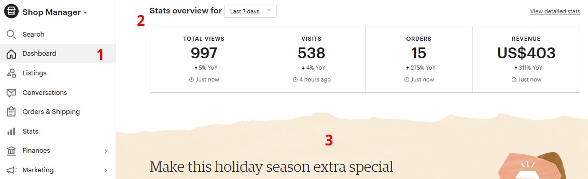
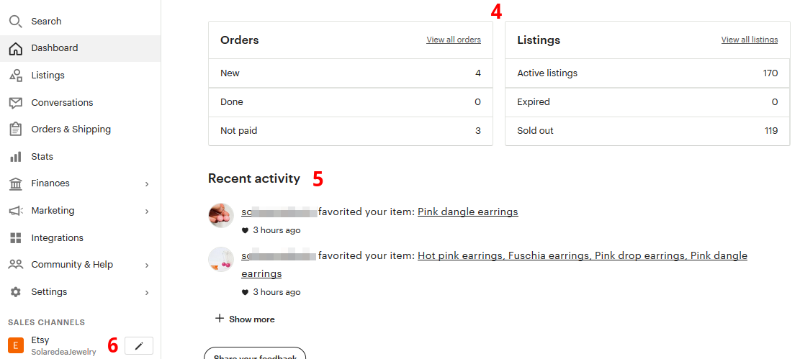
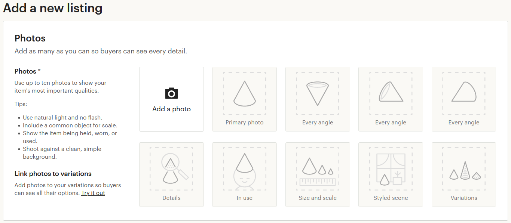
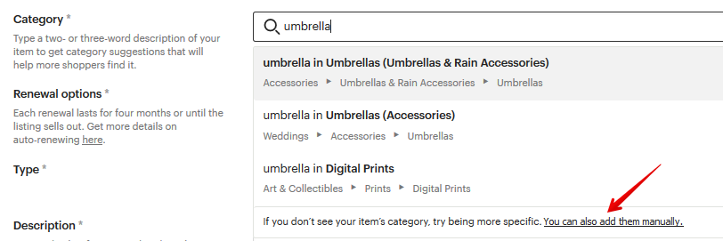
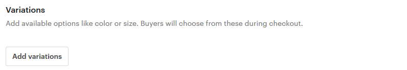
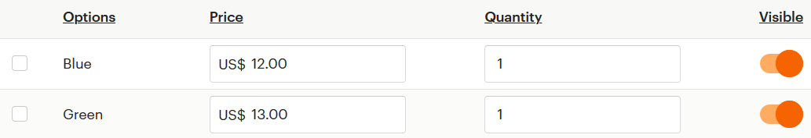

3. Добавление товаров
Какие товары можно размещать на Etsy
Существуют 2 основных типа товаров – это физические и цифровые.
Первые – это украшения, куклы, сувениры, одежда и т.п. Всё, что можно потро-
гать и нужно отправить клиенту по почте. А цифровые – это то, что можно ска-
чать в виде файлов, например, шаблоны выкроек, принты картин и прочее.
Физические товары также делятся на современные (созданные вами) и винтаж-
ные (созданные 20 лет назад или раньше и которые вы нашли, например, на
«блошином» рынке или в закромах у себя на чердаке).
Также к физическим товарам относятся материалы для создания хендмейда,
например, пряжа, рабочие инструменты, камни и т.п. Их можно делать как са-
мостоятельно, так и перепродавать уже готовые.
Размещение листингов платное или бесплатное
Если вы регистрировали магазин не по партнёрской ссылке и у вас нет 40 бес-
платных листингов, то стоимость размещения каждого нового товара – 20 цен-
тов ($0.20).
Если у вас на балансе магазина есть бесплатные листинги, то за публикацию
нового товара спишется 1 бесплатный листинг.
Что такое Shop Manager
Так называется личный кабинет продавца. Его можно открыть по ссылке
https://www.etsy.com/your/shops/me/dashboard или кликнув на значок Shop
Manager в правом верхнем углу сайта.




Слева (цифра 1) – меню личного кабинета со ссылками на все разделы.
Цифра 2 – статистика просмотров, визитов, заказов и прибыли за выбранный
период времени
Цифра 3 – полезные подсказки Etsy о том, как вести бизнес и информация о
новых сервисах
Цифра 4 – количество необработанных заказов и число листингов. Под числом
новых заказов (Orders – new) видно, нет ли просроченных заказов (Overdue) или
неоплаченных (Not paid). А под числом активных листингов (Active Listings) нахо-
дится напоминание о том, у каких скоро закончится срок размещения (Expired)
и сколько продано без повторного выставления в магазине (Sold out).
Цифра 5 – недавняя активность в магазине (продажи, отзывы, фавориты мага-
зина или листингов)
Цифра 6 – список доступных каналов продаж. Например, если у вас есть сайт
Pattern – ссылка на него будет в этой области личного кабинета.


Как добавить листинг с физическим товаром
Шаг 1 – открыть страницу Shop Manager – Listings – Add a listing.
Шаг 2 – добавить фотографии и информацию о товаре
• Photos: вы можете добавить от 1 до 10 фотографий. И лучше использовать
этот раздел по максимуму, так как в интернете человек не может потро-
гать ваш товар и покрутить его в руках. Всё что ему остаётся – это смот-
реть на фотографии. Постарайтесь, чтобы они ответили на все возможные
вопросы клиента. Etsy советуют загружать фотографии не меньше 2000
пикселей по ширине. Но лучше, если они будут больше – чтобы покупа-
тели смогли в подробностях разглядеть ваш товар. Если размер фотогра-
фий большой, то Этси автоматически ужимает их до 3000 пикселей. Фо-
тографии должны быть в формате JPG, PNG или GIF.


• Video: видео листинга. Отличная возможность показать свой товар “вжи-
вую”. Вы можете загрузить видео длиной от 5 до 15 секунд, оно будет без
звука. Желательно, чтобы формат был таким же, как у заглавной фотогра-
фии – если первое фото горизонтальное, то и видео лучше снять горизон-
тально. Максимальный размер загружаемого файла – 100 Mb.
• Title: заголовок листинга. Это один и важнейших элементов карточки то-
вара, наряду с тэгами (о которых речь пойдёт ниже). От текста в заголовке
зависит то, будут ли находить вас через поиск Etsy и Google или нет. В
title нужно указать основные характеристики товара. Какие слова и фразы
люди вводят в поиске, чтобы найти такие же товары, как и ваш. Макси-
мальная длина заголовка – 140 символов с пробелами.
• About this listing: здесь есть 3 параметра
o Who made it? (кто это создал). Возможные варианты: я (I did), со-
трудник магазина (a member of my shop), другая компания или че-
ловек (another company or person). Последний вариант подходит,
если вы продаёте винтаж или материалы для творчества.


o What is it? (что это). Готовый товар (a finished product) или инстру-
менты/материалы для создания каких-то предметов (a supply or tool
to make things).
o When was it made? (когда это сделано). Здесь можно выбрать Made
to order, то есть товар ещё не готов, а показан образец, который
можно сделать, если покупатель попросит об этом. Остальные
варианты – это примерный год изготовления вашего товара.
• Category: нужно указать, к какой категории товаров можно отнести изде-
лие. Указать её можно двумя способами. Первый – ввести слово, которое
характеризует товар, и выбрать категорию, которую предлагает Etsy.
Второй способ – найти нужную категорию вручную. Для этого нажмите
ссылку You can also add them manually.



После этого укажите главную категорию и подкатегории товара.
• Далее идут атрибуты товара, которые вместе с заголовками и тэгами вли-
яют на результаты поиска Этси.
Часть атрибутов общие для всех категорий товаров, а часть появляется
только при выборе определенного типа изделия.
• Primary color: основной цвет изделия (выбирайте тот, который ближе всего
вам подходит. Например, здесь нет лимонного цвета, но есть жёлтый и
зелёный)
• Secondary color: второстепенный цвет изделия (если есть)
• Occasion: для какого события (например, годовщина или день рождения)
• Style: стиль изделия


• Holiday: для какого официального праздника (например, Рождество или
День независимости)
• Sock size: этот атрибут нужно указать, если вы продаёте, например, носки.
А если у вас браслеты, то здесь будет атрибут Длина браслета. Для обуви
– размер. И т.п. Для каких-то категорий дополнительных атрибутов нет
(например, рюкзаки).
Все атрибуты опциональны – их можно указывать, а можно и нет. Но
лучше указать то, что знаете.
• Renewal options: параметры обновления листинга. Добавленный товар
размещается на Этси в течение 4 месяцев. После этого (если его не купят)
он попадает в раздел неактивных. Вы можете снова выставить его на про-
дажу вручную (для этого выберите Manual) или автоматически (Automatic).
Новое размещение стоит также 20 центов.
• Type: тип товара. В нашем случае – физический (Physical).
• Description: описание товара. Далеко не все покупатели читают этот текст.
Но несмотря на это, стоит его заполнить максимально полезными сведе-
ниями, например, размеры изделия, вес (если это важно), цвет и т.п. Также
можно указать основные правила работы магазина: сроки отправки и до-
ставки, правила возврата/отмены заказа и т.п.


• Production partners: если часть работы по изготовлению ваших товаров вы-
полняет сторонняя кампания (специально для вас), то её необходимо ука-
зать в этом разделе. Подробнее об этом смотрите вопрос «Как указать
компанию, которая помогает производить товары?»
• Custom orders: поставьте здесь галочку, если хотите, чтобы покупатели
могли написать вам сообщение и попросить сделать точно такой же товар,
но с какими-то изменениями (например, в другом цвете). Чтобы эта
настройка появилась, нужно включить данную возможность в параметрах
магазина Shop Manager – Settings – Options – Enabled Request Custom Order.
• Section: укажите, в какой раздел/секцию вашего магазина поместить но-
вый товар. Если они у вас ещё не созданы, то выберите пункт Add a section.
• Tags: еще один параметр (наряду с заголовком и атрибутами), который
крайне важен для того, чтобы вас находили в поиске Etsy. Желательно,
чтобы тэги повторяли поисковые запросы людей и то, что у вас написано
в заголовке. Можно добавить 13 тэгов, каждый из которых может быть
длиной не более 20 символов с пробелами (для английского языка).
• Materials: материалы, из которых сделан ваш товар. Можно указать до 13
наименований.


• Price: цена на товар в долларах (или в той валюте, которую вы выбрали в
настройках).
• Quantity: количество товара в наличии.
• SKU: артикул товара (если он у вас есть; параметр видите только вы)
Далее вы можете добавить варианты изготовления вашего товара. Например,
для одежды это могут быть размеры (S, M, L), для колец – диаметр.
Таких вариаций (Variations) может быть максимум 2.
Чтобы добавить варианты товара, нажмите Add variations.
После того, как вы выбрали нужные параметры, следует добавить их значения.
Для каждого варианта можно указать его стоимость и количество.



Если вы решите временно не показывать покупателю какой-либо из вариантов
товара, то передвиньте переключатель Visible в левое положение.
В результате на странице товара покупатели увидят примерно так:
Если у вас несколько вариаций товаров (например, разного цвета), то каждую
из них можно привязать к загруженной в листинг фотографии. И при выборе
нужной вариации при заказе товара Etsy покажет покупателю связанную с ней
фотографию.
Чтобы это сделать, нажмите кнопку Link photos.